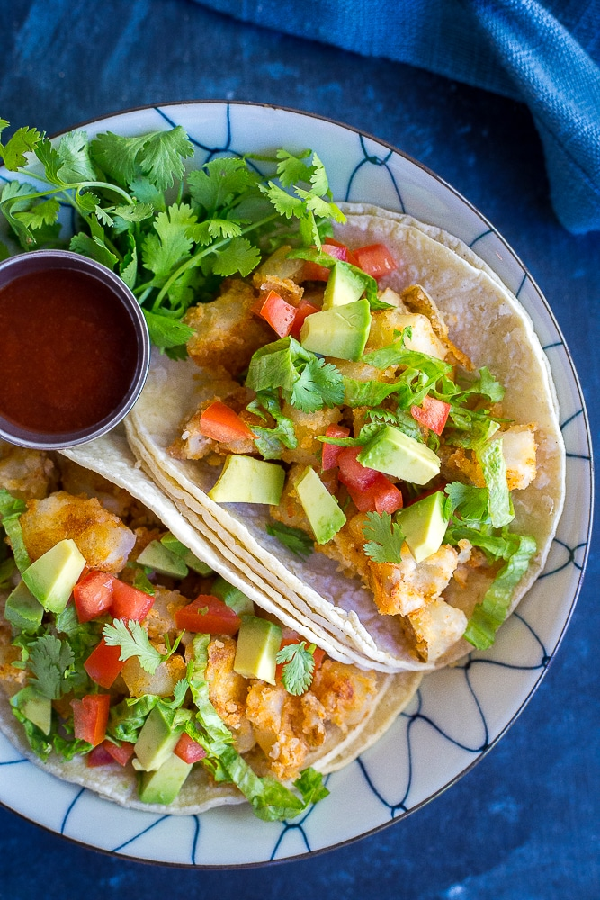

WFPB Tacos
Description
Vegan, potato-and-tofu filling, wfpb
Makes enough filling for 30ish small tortillas, i.e. leftovers for tomorrow with rice!
Ingredients
- 2 lbs of potatoes, peeled and diced
- 1 onion, diced
- 2 packages of firm tofu
- nutritional yeast
- paprika
- black salt
- tumeric
- salt + pepper
- toppings like tomatoes, avocado, and salsa.
Steps
- Add onion to a pot with some water and cook until soft, adding more water when needed
- After 5 minutes or so, add potatoes.
- Crumble tofu with hands into pot, keeping some larger chunks.
- Add paprika, black salt, tumeric, salt and pepper to taste.
- Cook another ten minutes until onions start to carmalize and then turn off the heat.